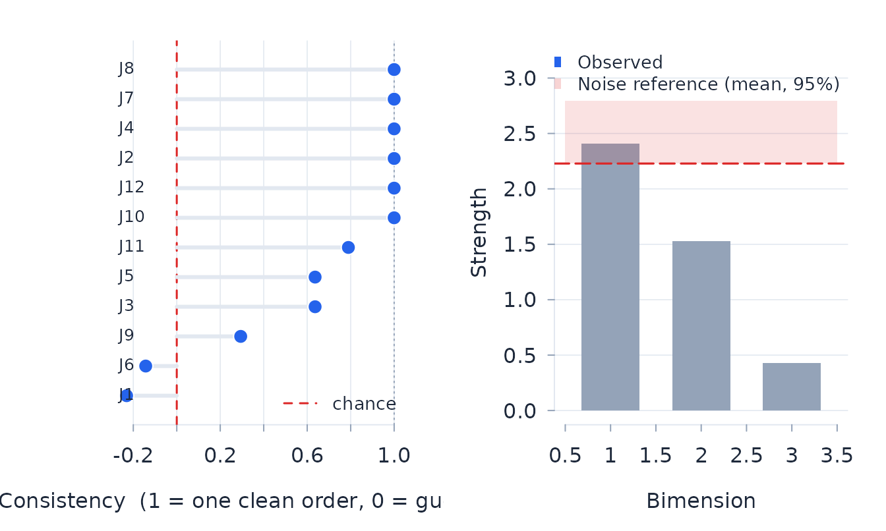

Rasch analysis of paired comparisons
Josh McGrane
Source:vignettes/paired-comparisons.Rmd
paired-comparisons.RmdFit the Bradley–Terry–Luce model
Paired-comparison data record two objects and an observed preference. In the Bradley–Terry–Luce model (Bradley and Terry 1952; Luce 1959), the log odds of choosing object A over object B are their location difference – the conditional form of the dichotomous Rasch model (Rasch 1960; Andrich 1978). The comparison graph must connect all objects; otherwise their relative locations are not identified.
d <- simulate_btl(n_objects = 7, n_judges = 12,
reps_per_pair = 20, seed = 5)
fit <- btl(d, object_a = "object_a", object_b = "object_b",
winner = "winner", judge = "judge")
fit
#> Bradley-Terry-Luce analysis: 7 objects, 420 comparisons, 12 judges
#> Conditional ML: converged in 6 iterations; sandwich SEs clustered by judge
#> Object separation index 0.970; pairwise chi-square 20.37 on 15 df, p = 0.158
#> object location se comparisons wins fit_resid
#> O1 -1.820 0.180 120 16 0.224
#> O2 -0.930 0.216 120 35 -0.967
#> O3 -0.203 0.215 120 54 1.179
#> O4 -0.276 0.208 120 52 -0.407
#> O5 0.565 0.124 120 75 0.148
#> O6 1.198 0.243 120 91 0.875
#> O7 1.465 0.220 120 97 -0.976
#> Judges beyond |fit residual| 2.5: 0
fit$objects
#> object location se comparisons wins infit_ms outfit_ms fit_resid df_fit
#> 1 O1 -1.8195 0.1795 120 16 1.0175 1.0674 0.2242 118.3
#> 2 O2 -0.9299 0.2160 120 35 0.9730 0.8489 -0.9665 118.3
#> 3 O3 -0.2029 0.2149 120 54 1.1463 1.1531 1.1791 118.3
#> 4 O4 -0.2763 0.2075 120 52 0.9647 0.9512 -0.4071 118.3
#> 5 O5 0.5650 0.1245 120 75 0.9708 1.0213 0.1476 118.3
#> 6 O6 1.1983 0.2427 120 91 1.0906 1.2000 0.8747 118.3
#> 7 O7 1.4653 0.2205 120 97 0.9551 0.7870 -0.9760 118.3Judge residuals describe agreement with the common object scale; they are not person measures. Object fit, judge fit, targeting, and comparison information address different parts of the design and should be considered together.
fit$judges
#> judge n infit_ms outfit_ms fit_resid df_fit
#> 1 J1 32 1.1764 0.9699 -0.07376 31.54
#> 2 J10 35 0.7386 0.6181 -1.27240 34.50
#> 3 J11 39 1.0522 1.2970 0.78439 38.44
#> 4 J12 35 1.1293 1.1234 0.29638 34.50
#> 5 J2 31 0.8139 1.1361 0.34239 30.56
#> 6 J3 38 1.1394 1.1366 0.42621 37.46
#> 7 J4 35 0.8343 0.8276 -0.51156 34.50
#> 8 J5 31 1.0460 0.9253 -0.22159 30.56
#> 9 J6 36 1.3172 1.3684 0.96433 35.49
#> 10 J7 35 1.0353 0.9238 -0.22938 34.50
#> 11 J8 35 0.8332 0.7551 -0.83367 34.50
#> 12 J9 38 1.0730 0.9232 -0.19434 37.46
judge_surprise(fit, "J1")
#> Judge J1: 32 comparisons over 7 objects
#> No object judged against its consensus standing.
btl_information(fit)
#> Paired-comparison design information: 7 objects, total 66.74
#> One-comparison Fisher information about the location gap (dichotomous: P(1 - P))
#> object location se n_comparisons information se_naive
#> O1 -1.820 0.180 120 12.923 0.278
#> O2 -0.930 0.216 120 19.449 0.227
#> O3 -0.203 0.215 120 22.322 0.212
#> O4 -0.276 0.208 120 22.175 0.212
#> O5 0.565 0.124 120 21.717 0.215
#> O6 1.198 0.243 120 18.435 0.233
#> O7 1.465 0.220 120 16.455 0.247
#> Note: se is the judge-clustered Godambe sandwich standard error; se_naive = 1/sqrt(information) is a design-only yardstick (the object's comparisons treated in isolation), not a bound -- the fitted se can sit below or above itCheck transitivity and residual structure
Circular triads identify local contradictions in the observed ordering. Residual dimensionality asks whether comparisons contain a structured second attribute after the primary scale is fitted.
tr <- btl_transitivity(fit)
tr
#> Paired-comparison transitivity: 7 objects, 26 complete triples
#> Circular triads: 0 (0.0% of triples; random-tournament benchmark 25%) -> consistency 1.00
#> Per-judge consistency reported for 12 judge(s); least consistent -0.23
#> Note: the 0.25 chance rate is a random-tournament benchmark, not the fitted BTL expected circular rate; transitivity is descriptive
#> Note: 2 pair(s) split exactly evenly and are set aside
dimensions <- btl_dimensionality(fit, reps = 20)
dimensions
#> Paired-comparison residual dimensionality: 3 bimension(s)
#> Leading bimension strength 2.409 (70% of residual; reference 95%: 2.792) -> within the conditional reference
par(mfrow = c(1, 2))
plot_btl_transitivity(tr)
plot_btl_scree(dimensions)
The simulation reference for dimensionality uses twenty replicates here to keep the vignette quick. A final analysis should use enough replicates to stabilise the reference distribution.
Equate panels through common objects
btl_equate aligns two calibrations that share at least
three objects. For two fitted calibrations, drift inference is withheld
until independent judges and comparisons are stated explicitly.
eq <- btl_equate(current_panel, reference_panel, independent = TRUE)
eq$table
eq$equated # reference panel on the current panel's originA bank table may be used in place of reference_panel.
Marginal object standard errors are not enough for drift tests because
they omit the covariance created by the bank’s fitted origin. Attach the
joint matrix as attr(bank, "cov_location"), ordered like
the bank rows or named by object; otherwise the alignment is
descriptive. A bank treated as fixed may instead carry zero standard
errors. Dependent panels require a joint or paired bootstrap outside
this function.
Linked frames for paired comparisons
btl_efrm extends the paired-comparison model when judges
belong to panels and objects belong to linked sets whose units or
origins may differ. Cross-set comparisons establish the common scale.
Without enough cross-set links, set units and origins are not
identified.
de <- simulate_btl_efrm(
n_objects_per_set = 5, n_sets = 2,
n_judges_per_panel = 6, n_panels = 2,
reps_within = 15, reps_cross = 15,
set_units = c(1, 1.3), set_origins = c(0, 0.6), seed = 9
)
ef <- btl_efrm(
de, "object_a", "object_b", winner = "winner", judge = "judge",
panels = "panel", object_sets = attr(de, "truth")$object_sets,
se_method = "conditional"
)
ef$phi_table
#> panel phi se_log_phi z p p_adj significant
#> 1 panel1 1.1066 0.1166 0.8685 0.3851 0.7703 FALSE
#> 2 panel2 0.9037 0.1166 -0.8685 0.3851 0.7703 FALSE
ef$alpha_table
#> set alpha se_log_alpha z p p_adj significant
#> 1 set1 1.00 NA NA NA NA NA
#> 2 set2 1.35 0.1179 2.549 0.0108 0.0108 TRUE
ef$kappa_table
#> set kappa se_kappa z p p_adj significant
#> 1 set1 0.0000 NA NA NA NA NA
#> 2 set2 0.2798 0.1228 2.279 0.02269 0.02269 TRUEFor final inference, the default judge bootstrap resamples judges
within panels and refits both stages. It therefore propagates stage-one
uncertainty and retains dependence among a judge’s comparisons. The
parametric bootstrap (se_method = "bootstrap") instead
draws independent outcomes from the fitted model and is useful as a
model-based sensitivity analysis. The conditional option used above is a
fast inspection method and does not propagate stage-one uncertainty into
the set-linking parameters. Read the omnibus unit tests before the
Holm-adjusted individual unit contrasts.
References
Andrich, D. (1978). Relationships between the Thurstone and Rasch approaches to item scaling. Applied Psychological Measurement, 2, 451–462.
Bradley, R. A., and Terry, M. E. (1952). Rank analysis of incomplete block designs: I. The method of paired comparisons. Biometrika, 39, 324–345.
Kendall, M. G., and Babington Smith, B. (1940). On the method of paired comparisons. Biometrika, 31(3/4), 324–345.
Luce, R. D. (1959). Individual Choice Behavior: A Theoretical Analysis. Wiley.
Rasch, G. (1960). Probabilistic Models for Some Intelligence and Attainment Tests. Copenhagen: Danish Institute for Educational Research. (Expanded edition, 1980, Chicago: University of Chicago Press.)